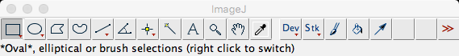
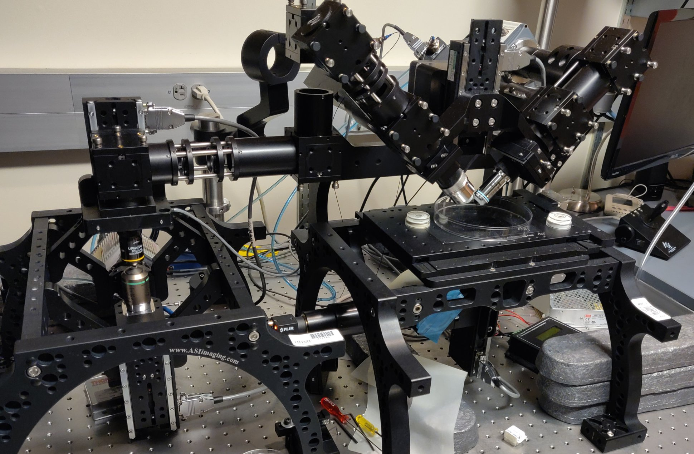
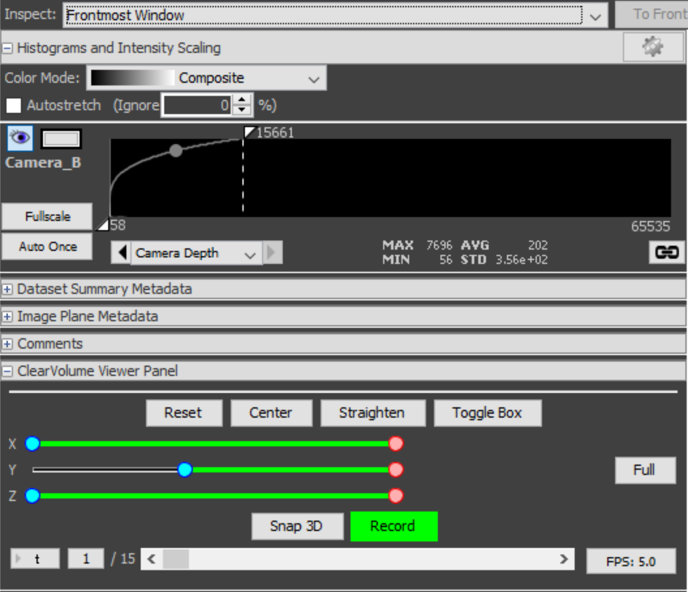
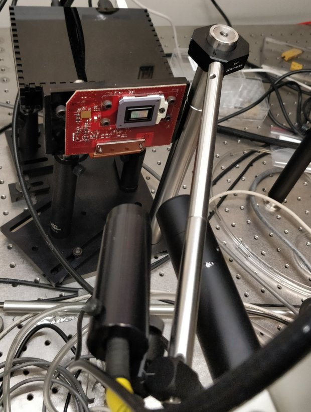
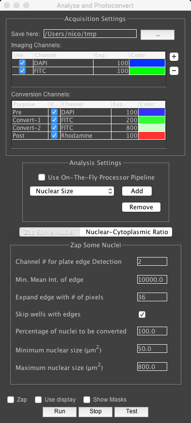
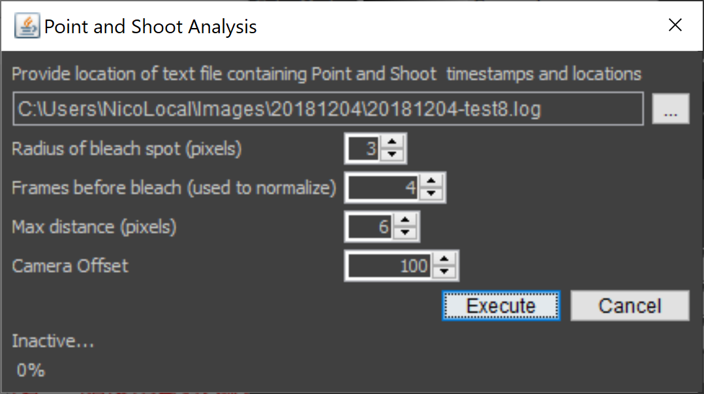
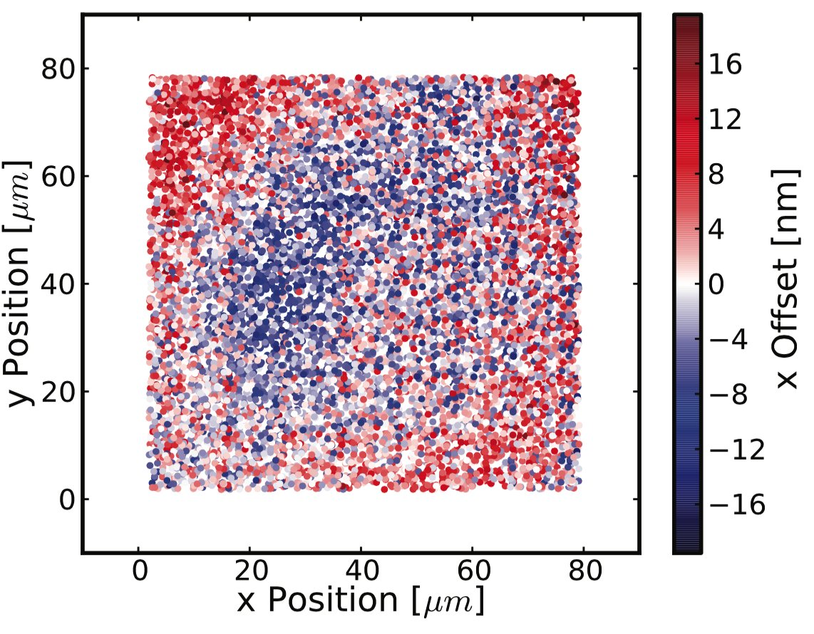

Tools for Cell Biologists using Microscopes

Madison 2019, Nico Stuurman, Vale lab, UCSF/HHMI
μManager - Open Source Software For Microscopes


- Supports devices from >150 vendors
- Code contributions from >100 authors
- >40,000 registered users, >6,000 microscopes
- >5,000 mentions (G Scholar), cited >1,600 times
diSPIM: μManager as user interface

Hari Shroff (NIH)
diSPIM: μManager as user interface

Jon Daniels (ASI)

diSPIM: Live tissue imaging

Kara McKinley
Organoid cell biology

https://valelab.ucsf.edu/~nico
doi: 10.7554/eLife.36739
diSPIM: Live tissue imaging
9 day old mouse embryo, Arl31b-GFP
(Markus Delling, UCSF)
(Markus Delling, UCSF)
diSPIM: Multi-immersion objective and remote focus
3D Viewer in μManager

Uses ClearVolume API by Loic Royer (MPI-Dresden, BioHub-SF)
Cell marking by photo-conversion

Xiaowei Yan

Cell marking by photo-conversion
Xiaowei Yan



Automated FRAP analysis

Jess Sheu-Gruttadauria




Combining TIRF and Confocal images

Rui Dong

Nanometer accuracy measurements of distances between fluorophores

Ron Vale

Stefan Niekamp
Why bother with single molecule direct distance measurements?

Direct distance measurements


Direct distance measurements
MLE - Gaussian Fit

Register

Registration: Piece-wise affine transform




Registration: Piece-wise affine transform


Use uncertainty information to improve distance estimate
$$σ_d = \sqrt{σ_{reg}^2 + σ_{loc_1}^2 + σ_{loc_2}^2 + σ_{σ_{loc_1}}^2 + σ_{σ_{loc_2}}^2} $$
$$P_2D = \left(\dfrac{r}{σ_d^2}\right)exp\left(\dfrac{-μ^2+r^2}{ 2σ_d^2}\right)I_0\left(\dfrac{rμ}{σ_d^2}\right)$$
Validation: Kinesin bound to MicroTubules
 |
 |
Multiple observations
Treat as individual observations, or first average positions (Vector)
Multiple observations
Treat as individual observations, or first average positions (Vector)
Multiple observations
Treat as individual observations, or first average positions (Vector)
Validation using DNA origamis

Dynein stalk conformation depends on nucleotide state

Pushing the limits: more photons please!
$$σ∝1 / \sqrt{N}$$
σ: Localization Precision
N: Number of Photons
N: Number of Photons

Organic dyes
Limited photon #(N)
Monovalent
Quantum dots
High photon #(N)
Often multivalent
?
Not too big
High photon #(N)
Monovalent
High photon #(N)
Monovalent

DNA Fluorocubes
High photon #(N)
Monovalent
High photon #(N)
Monovalent
DNA Fluorocubes: small, customizable multi-dye reagents

DNA Fluorocubes: small, customizable multi-dye reagents


DNA Fluorocubes are very photostable


Photo-physical properties of DNA Fluorocubes

More photostable
less bleaching

Similar brightness/
photons per frame

Higher total number
of photons
High precision localization
for long periods of time
for long periods of time
DNA Fluorocubes from various dyes have desirable properties

Fluorocubes enable accurate motor protein tracking for long periods of time


Temporal resolution: 102ms
Spatial resolution: 3.9nm
Spatial resolution: 3.9nm
Nagging questions...
- Open Source, great, but...
- Rewarding/funding of tool deployment (versus development)
- Scattered tools: inefficiency or diversity?
- Is this the best way to empower scientists?
What is the best structure for a project like Micro-Manager?
Thanks!
How To Measure Distances
$$d=\left(\dfrac{\sum_{i=1}^{n} d_i}{n}\right)$$
How To Measure Distances
How To Measure Distances
$$P_2D = \left(\dfrac{r}{σ_d^2}\right)exp\left(\dfrac{-μ^2+r^2}{ 2σ_d^2}\right)I_0\left(\dfrac{rμ}{σ_d^2}\right)$$
r (measured distance), μ (actual distance), σd (distance uncertainty),
I0 (modified Bessel function of integer order zero), Churchman et al, PNAS 102 (2005)
I0 (modified Bessel function of integer order zero), Churchman et al, PNAS 102 (2005)
|
|

|
DISTANCE ESTIMATE FROM P2D FIT FAILS WHEN
μ <= σd
|
Use Uncertainty Information to improve distance estimate
$$σ_d = \sqrt{σ_{reg}^2 + σ_{loc_1}^2 + σ_{loc_2}^2 + σ_{σ_{loc_1}}^2 + σ_{σ_{loc_2}}^2} $$
Registration: TetraSpeck bead color centers are offset
|
 |